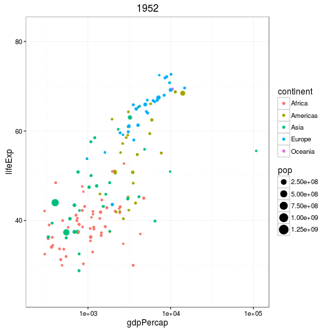
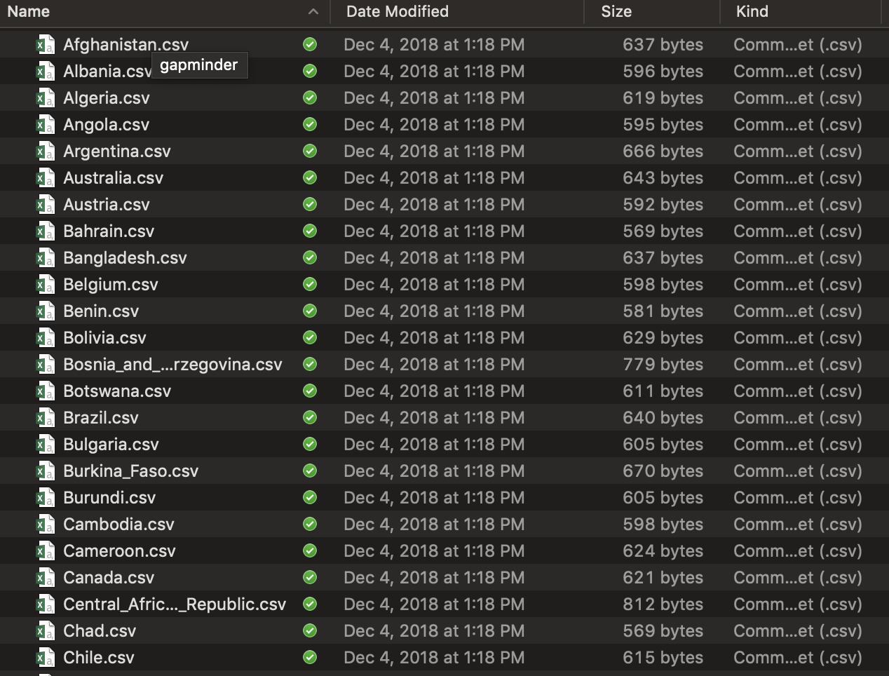
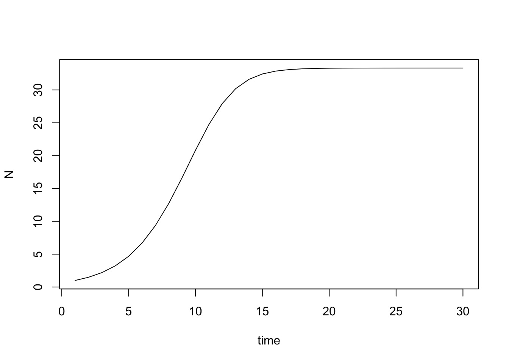
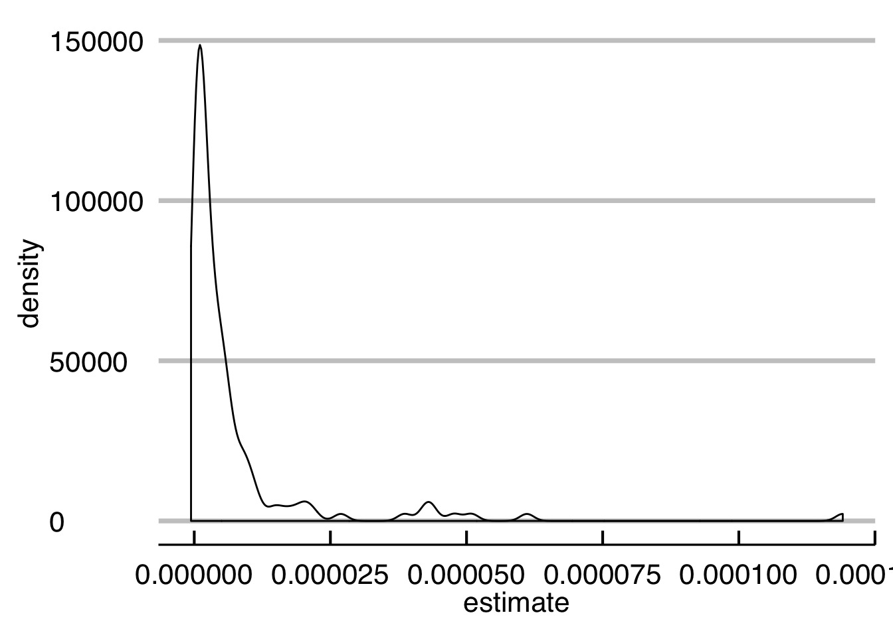
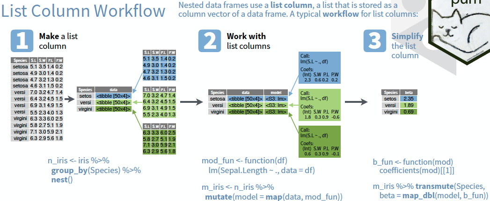
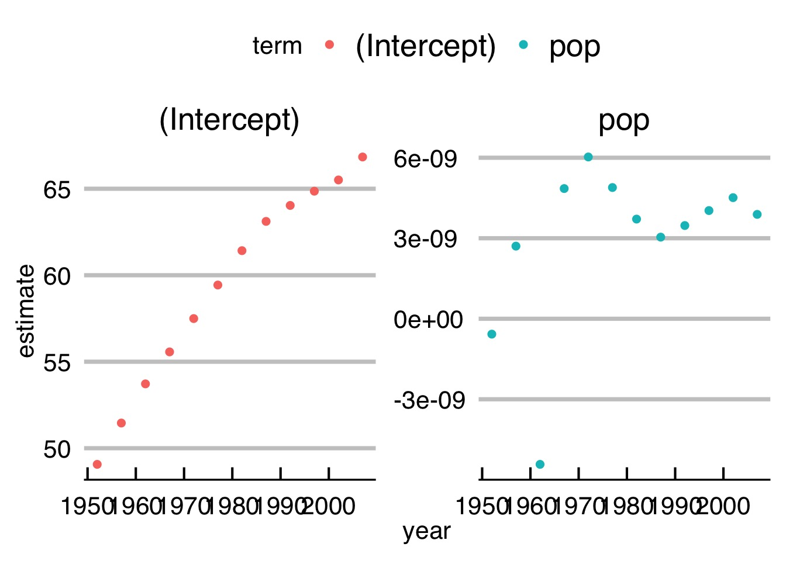

Iteration
A Repetitive Workflow
- Often, we want to perform the same task on different data sets
- Until now, we’ve done this with
group_byandsummarize
- But what if we need to do more than a simple summary?
The Gapminder Data

Questions we can ask
- How does the relationship change by year?
- How does the relationship differ by country?
- What is the ditribution of slopes by year, country, or both!
But here is where we start…

So many files…
What do we know how to do?
- Write a workflow for one file!
read_csv()
lm()
broom:tidy()
- But we want to iterate over all files and lots of models…
Isn’t this what computers/robots are all about?

The Map Paradigm


Map functions
Take a list or vector as input
- Apply a function to each elment of the list/vector
- (note, see the R apply, sapply, and lapply functions, too)
Return the corresponding object, bound together into a prespecified type
Map in visual terms

Median Example
Median Example
$a
[1] -0.009649784
$b
[1] 0.1999248
$c
[1] 0.676125
$d
[1] -0.5562476The Map Paradigm
What if I don’t want a list

The world of maps
map()makes a list.map_df()makes a tibble/data frame.map_lgl()makes a logical vector.map_int()makes an integer vector.map_dbl()makes a double vector.map_chr()makes a character vector.
More medians
a b c d
-0.009649784 0.199924771 0.676124958 -0.556247552 a b c d
"-0.009650" "0.199925" "0.676125" "-0.556248" # A tibble: 1 x 4
a b c d
<dbl> <dbl> <dbl> <dbl>
1 -0.00965 0.200 0.676 -0.556What if I have more than one argument?
a b c d
-0.009649784 0.199924771 0.676124958 -0.556247552 What if I have more than one argument?

What if I want a more flexible syntax?
a b c d
-0.009649784 0.199924771 0.676124958 -0.556247552 You try!
What does
map(-2:2, rnorm, n = 5)do? How is it different frommap_dbl(-2:2, rnorm, n = 5)?Get the mean of each column of
dfCompute the number of unique values in each column of
iris(hint, you’ll need length and unique)!
Now, what about our problem?
We have a lot of files
They are all in the same format, so…
Your turn again!
Make one big tibble using
list.files(),map_df(), andread_csv()Make a list of tibbles
list.files(),map(), andread_csv()as wellYou might need to use
paste0()orstringr::str_cto make a full file path with the output oflist.files()
One Line to load them all
files <- list.files("./data/gapminder/") %>%
str_c("./data/gapminder/", .)
gapminder_df <- map_df(files, read_csv)
gapminder_df# A tibble: 1,704 x 6
country continent year lifeExp pop gdpPercap
<chr> <chr> <int> <dbl> <int> <dbl>
1 Afghanistan Asia 1952 28.8 8425333 779.
2 Afghanistan Asia 1957 30.3 9240934 821.
3 Afghanistan Asia 1962 32.0 10267083 853.
4 Afghanistan Asia 1967 34.0 11537966 836.
5 Afghanistan Asia 1972 36.1 13079460 740.
6 Afghanistan Asia 1977 38.4 14880372 786.
7 Afghanistan Asia 1982 39.9 12881816 978.
8 Afghanistan Asia 1987 40.8 13867957 852.
9 Afghanistan Asia 1992 41.7 16317921 649.
10 Afghanistan Asia 1997 41.8 22227415 635.
# ... with 1,694 more rowsOr - keep ’em in a list
The nice thing about a list is that we can just use map() on it in the future!

Is there More?
Oh, so much more - see
https://adv-r.hadley.nz/functionals.html
Map with Two Lists
 Or use
Or use ~ with .x and .y
Map with an arbitrary number of lists

Invisible Outputs (e.g. for plotting)

Use list values AND indices
(SUPER useful for time series, etc.)
[1] 1.476911 2.430700 3.047691 4.859135 5.913922 6.308767 7.248104
[8] 8.411745 9.703914 10.020662And more…
r <- 1.5
k <- 100
pop <- accumulate(1:30, ~r*.x*(1-.x/k), init = 2)
plot(pop, type = "l", ylab = "N", xlab = "time")
Back to our problem
- We have loaded everything
- But - how do we get a distribution of lifeExp ~ pop by country?
mapto the rescue!
The Simple List-based solution for model fits
Just fit for each tibble!
Shockingly simple, no?
And those coefficients? Map again to the rescue!
# A tibble: 142 x 6
Country term estimate std.error statistic p.value
<chr> <chr> <dbl> <dbl> <dbl> <dbl>
1 1 pop 0.000000577 0.000000134 4.30 1.57e- 3
2 2 pop 0.00000729 0.000000717 10.2 1.37e- 6
3 3 pop 0.00000118 0.0000000759 15.5 2.55e- 8
4 4 pop 0.00000128 0.000000248 5.14 4.35e- 4
5 5 pop 0.000000553 0.0000000128 43.1 1.08e-12
6 6 pop 0.00000105 0.0000000505 20.8 1.49e- 9
7 7 pop 0.00000974 0.000000729 13.3 1.07e- 7
8 8 pop 0.0000386 0.00000402 9.60 2.31e- 6
9 9 pop 0.000000259 0.00000000658 39.4 2.66e-12
10 10 pop 0.00000692 0.000000696 9.95 1.67e- 6
# ... with 132 more rowsAnd the distribution…

Your turn!
Start with:
- Plot the relationship between slope and year for
lifeExp ~ pop
Solution
But I don’t like lists! Enter - the list-column!

Let’s nest a listcolumn!
# A tibble: 142 x 2
country data
<chr> <list>
1 Afghanistan <tibble [12 × 5]>
2 Albania <tibble [12 × 5]>
3 Algeria <tibble [12 × 5]>
4 Angola <tibble [12 × 5]>
5 Argentina <tibble [12 × 5]>
6 Australia <tibble [12 × 5]>
7 Austria <tibble [12 × 5]>
8 Bahrain <tibble [12 × 5]>
9 Bangladesh <tibble [12 × 5]>
10 Belgium <tibble [12 × 5]>
# ... with 132 more rowsMap + Listcolumns = Love
What did we do?
# A tibble: 142 x 3
country data mods
<chr> <list> <list>
1 Afghanistan <tibble [12 × 5]> <S3: lm>
2 Albania <tibble [12 × 5]> <S3: lm>
3 Algeria <tibble [12 × 5]> <S3: lm>
4 Angola <tibble [12 × 5]> <S3: lm>
5 Argentina <tibble [12 × 5]> <S3: lm>
6 Australia <tibble [12 × 5]> <S3: lm>
7 Austria <tibble [12 × 5]> <S3: lm>
8 Bahrain <tibble [12 × 5]> <S3: lm>
9 Bangladesh <tibble [12 × 5]> <S3: lm>
10 Belgium <tibble [12 × 5]> <S3: lm>
# ... with 132 more rowsWhat about coefficients?
And…getting it back?
And…getting it back?
# A tibble: 142 x 6
country term estimate std.error statistic p.value
<chr> <chr> <dbl> <dbl> <dbl> <dbl>
1 Afghanistan pop 0.000000577 0.000000134 4.30 1.57e- 3
2 Albania pop 0.00000729 0.000000717 10.2 1.37e- 6
3 Algeria pop 0.00000118 0.0000000759 15.5 2.55e- 8
4 Angola pop 0.00000128 0.000000248 5.14 4.35e- 4
5 Argentina pop 0.000000553 0.0000000128 43.1 1.08e-12
6 Australia pop 0.00000105 0.0000000505 20.8 1.49e- 9
7 Austria pop 0.00000974 0.000000729 13.3 1.07e- 7
8 Bahrain pop 0.0000386 0.00000402 9.60 2.31e- 6
9 Bangladesh pop 0.000000259 0.00000000658 39.4 2.66e-12
10 Belgium pop 0.00000692 0.000000696 9.95 1.67e- 6
# ... with 132 more rowsYou try!
- Fit the relationship by year
- Plot coefficients (slope and intercept) by year (facet the term!)
Solution
Solution (cont’d)
